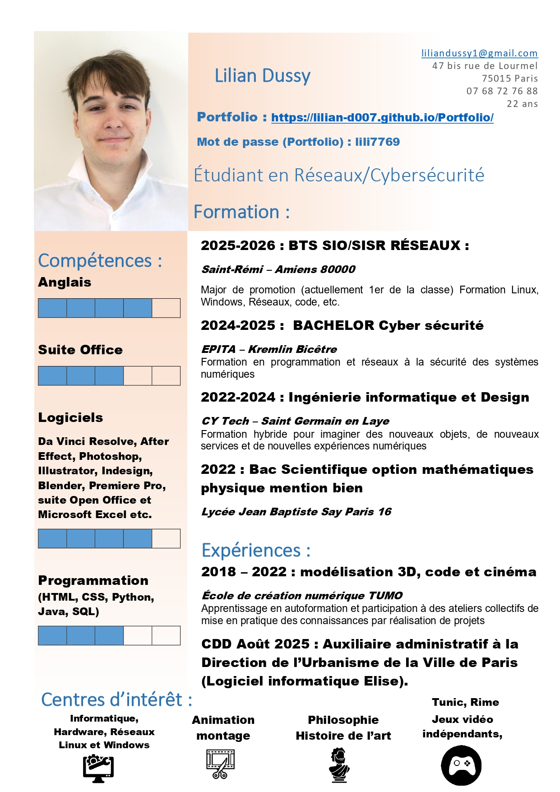

Accueil
Projets ▾
Projets Année 1
Projets Année 2
TPs/TDs ▾
TPs année 1
TPs année 2
TDs année 1
TDs année 2
CV
Lettre de motivation
Veilles ▾
Veille 1
Veille 2
Contacts
Mon CV

📄 Télécharger mon CV (PDF)